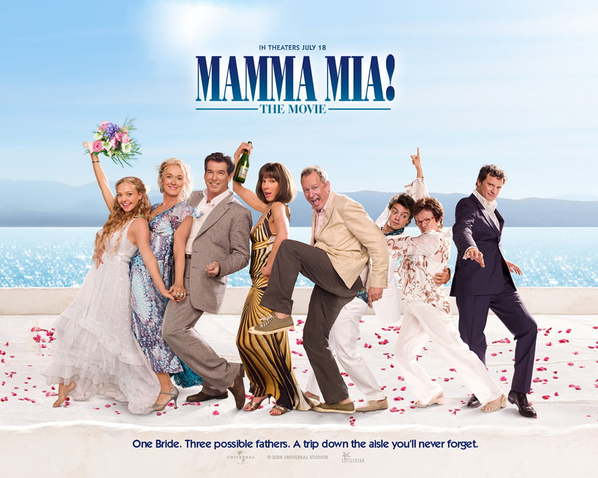

Un musical sobre la historia de Sophie, una joven que creció en una isla Griega y quiere conocer la identidad de su padre, pero la historia toma un giro inesperado cuando aparecen tres. Gira en torno a las canciones de Abba.

Mamma Mia! es una comedia musical basada en el grupo sueco ABBA, con un libreto de Catherine Johnson, la historia se desarrolla en una isla griega y gira en torno a Sophie, una joven que, antes de su boda, decide averiguar quién es su padre entre tres ex novios de su madre, Donna.